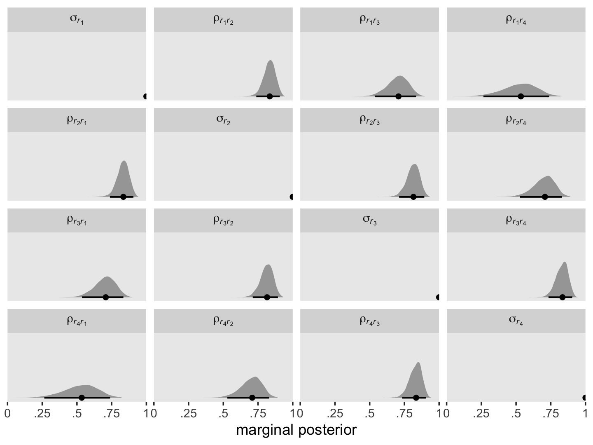

7Examining the Multilevel Model’s Error Covariance Structure
In this chapter…, we focus on the model’s random effects as embodied in its error covariance structure. Doing so allows us to both describe the particular error covariance structure that the “standard” multilevel model for change invokes and it also allows us to broaden its representation to other—sometimes more tenable assumptions—about its behavior. (Singer & Willett, 2003, p. 243, emphasis in the original)
7.1 The “standard” specification of the multilevel model for change
Willett (1988) clarified these data were simulated for pedagogical purposes, which will become important later on. For now, here’s our version of Table 7.1.
Our first model will serve as a comparison model for all that follow. We’ll often refer to it as the standard multilevel model for change. You’ll see why in a bit. It follows the form
where the \((\text{cog}_i - \overline{\text{cog}})\) notation is meant to indicate we are mean centering the time-invariant covariate \(\text{cog}_i\). In the data, the mean-centered version is saved as ccog.
where we’ve divided up the structural and stochastic components with our use of brackets. We might think of the terms of the stochastic portion as a composite residual, \(r_{ij} = [\epsilon_{ij} + \zeta_{0i} + \zeta_{1i} \text{time}_{ij}]\). Thus, we can rewrite the composite equation with the composite residual term \(r_{ij}\) as
If we were willing to presume, as in OLS or single-level Bayesian regression, that all residuals are independent and normally distributed, we could express that in statistical notation as
where \(r_{ij}\) is the \(i\)th person’s residual on the \(j\)th time point. The variance/covariance matrix \(\mathbf \Sigma\) is diagonal (i.e., all the off-diagonal elements are 0’s) and homoscedastic (i.e., all the diagonal elements are the same value, \(\sigma_r^2\)).
These assumptions are absurd for longitudinal data, which is why we don’t analyze such data with single-level models. If we were to make the less restrictive assumptions that, within people, the residuals were correlated over time and were heteroscedastic, we could express that as
this kind of structure can be called block diagonal, which means the off-diagonal elements are zero between persons, but allowed to be non-zero within persons (i.e., within blocks). The zero elements between person blocks explicate how the residuals are independent between persons. Notice that the variances on the diagonal vary across the four time points (i.e., \(\sigma_{r_1}^2, \dots, \sigma_{r_4}^2\)). Yet also notice that the block for one person is identical to the block for all others. Thus, this model allows for heterogeneity across time within persons, but homogeneity between persons.
The bulk of the rest of the material in this chapter will focus around how different models handle \(\mathbf{\Sigma}_r\). The standard multilevel growth model has one way. There are many others.
# A tibble: 4 × 7
name r .lower .upper .width .point .interval
<chr> <dbl> <dbl> <dbl> <dbl> <chr> <chr>
1 sigma[italic(r)[1]]^2 1443. 929. 2365. 0.95 median qi
2 sigma[italic(r)[2]]^2 1219. 811. 1979. 0.95 median qi
3 sigma[italic(r)[3]]^2 1209. 813. 1995. 0.95 median qi
4 sigma[italic(r)[4]]^2 1421. 915. 2431. 0.95 median qi
Though our precise numeric values are different from those in the text, we see the same overall pattern. Using our posterior medians, we can update \(\mathbf{\Sigma}_r\) to
For the opposites-naming data, composite residual variance is greatest at the beginning and end of data collection and smaller in between. And, while not outrageously heteroscedastic, this situation is clearly beyond the bland homoscedasticity that we routinely assume for residuals in cross-sectional data. (p. 252)
If you work through the equation at the beginning of this section–which I am not going to do, here–, you’ll see that the standard multilevel growth model is set up such that the residual variance follows a quadratic function with time. To give a sense, here we plot the expected \(\sigma_r^2\) values over a wider and more continuous range of time values.
set.seed(7)sigma %>%mutate(iter =1:n()) %>%slice_sample(n =50) %>%expand(nesting(iter, `sigma[epsilon]^2`, `sigma[0]^2`, `sigma[1]^2`, `sigma[0][1]`),time =seq(from =-4.2, to =6.6, length.out =200)) %>%mutate(r =`sigma[epsilon]^2`+`sigma[0]^2`+2*`sigma[0][1]`* time +`sigma[1]^2`* time^2) %>%ggplot(aes(x = time, y = r, group = iter)) +geom_line(linewidth =1/6, alpha =1/2) +scale_x_continuous(expand =c(0, 0)) +scale_y_continuous(expression(sigma[italic(r)]^2),expand =expansion(mult =c(0, 0.05)), limits =c(0, NA)) +labs(subtitle =expression("50 posterior draws showing the quadratic shape of "*sigma[italic(r)[time]]^2)) +theme(panel.grid =element_blank())
Since we have 4,000 posterior draws for all the parameters, we also have 4,000 posterior draws for the quadratic curve. Here we just show 50. The curve is at its minimum at \(\text{time} = -(\sigma_{01} / \sigma_1^2)\). Since we have posterior distributions for \(\sigma_{01}\) and \(\sigma_1^2\), we’ll also have a posterior distribution for the minimum point. Here it is.
If we plug those minimum time values into the equation for \(\sigma_{r_\text{time}}^2\), we’ll get the posterior distribution for the minimum variance value.
# A tibble: 1 × 6
r .lower .upper .width .point .interval
<dbl> <dbl> <dbl> <dbl> <chr> <chr>
1 1147. 773. 1853. 0.95 median qi
7.2.2 Covariance of the composite residuals
In addition to the variances in \(\mathbf{\Sigma}_r\), we might focus on the off-diagonal covariances, too. We can define the covariance between two time points \(\sigma_{r_j, r_{j'}}\) as
where \(\sigma_0^2\), \(\sigma_{01}\) and \(\sigma_1^2\) all have their usual interpretation, and \(t_j\) and \(t_{j'}\) are the numeric values for whatever variable is used to index time in the model, which is time in the case of fit7.1. Here we compute and plot the marginal posteriors for all \(4 \times 4 = 16\) parameters.
It might be helpful to reduce the complexity of this plot by focusing on the posterior medians. With a little help from geom_tile() and geom_text(), we’ll make a plot version of the matrix at the top of page 255 in the text.
sigma %>%select(contains("italic")) %>%pivot_longer(everything()) %>%mutate(name =factor(name, levels = levels)) %>%group_by(name) %>%median_qi(value) %>%mutate(label =round(value, digits =0)) %>%ggplot(aes(x =0, y =0)) +geom_tile(aes(fill = value)) +geom_text(aes(label = label)) +scale_fill_viridis_c("posterior\nmedian", option ="A", limits =c(0, NA)) +scale_x_continuous(NULL, breaks =NULL, expand =c(0, 0)) +scale_y_continuous(NULL, breaks =NULL, expand =c(0, 0)) +labs(subtitle =expression(hat(Sigma)[italic(r)]*" for the standard multilevel model for change")) +theme(legend.text =element_text(hjust =1)) +facet_wrap(~ name, labeller = label_parsed)
Although our posterior median values differ a bit from the REML values reported in the text, the overall pattern holds. Hopefully the coloring in the plot helps highlight what Singer and Willett described as a “‘band diagonal’ structure, in which the overall magnitude of the residual covariances tends to decline in diagonal ‘bands’ the further you get from the main diagonal” (p. 255).
One of the consequences for this structure is that in cases where both \(\sigma_1^2 \rightarrow 0\) and \(\sigma_{01} \rightarrow 0\), the residual covariance matrix becomes compound symmetric, which is:
Compound symmetric error covariance structures are particularly common in longitudinal data, especially if the slopes of the change trajectories do not differ much asroc people. Regardless of these special cases, however, the most sensible question to ask of your data is whether the error covariance structure that the “standard” multilevel model for change demands is realistic when applied to data in practice? The answer to this question will determine whether the standard model can be applied ubiquitously, as question we soon address. (pp. 255–256)
7.2.3 Autocorrelation of the composite residuals
We can use the following equation to convert our \(\mathbf{\Sigma}_r\) into a correlation matrix:
As before, it might be helpful to reduce the complexity of this plot by focusing on the posterior medians. We’ll make a plot version of the correlation matrix in the middle of page 256 in the text.
sigma %>%select(`sigma[italic(r)[1]]`:`sigma[italic(r)[4]]`) %>%pivot_longer(everything()) %>%mutate(name =factor(name, levels = levels)) %>%group_by(name) %>%median_qi(value) %>%mutate(label =round(value, digits =2)) %>%ggplot(aes(x =0, y =0)) +geom_tile(aes(fill = value)) +geom_text(aes(label = label)) +scale_fill_viridis_c("posterior\nmedian", option ="A", limits =c(0, 1)) +scale_x_continuous(NULL, breaks =NULL, expand =c(0, 0)) +scale_y_continuous(NULL, breaks =NULL, expand =c(0, 0)) +labs(subtitle =expression(hat(Omega)[italic(r)]*" for the standard multilevel model for change")) +theme(legend.text =element_text(hjust =1)) +facet_wrap(~ name, labeller = label_parsed)

The correlation matrix has an even more pronounced band-diagonal structure. Thus even though the standard multilevel model of change does not contain an explicit autocorrelation parameter \(\rho\), the model does account for residual autocorrelation. We might take this even further. Notice the parameters \(\rho_{r_2, r_1}\), \(\rho_{r_3, r_2}\), and \(\rho_{r_4, r_3}\) are all autocorrelations of the first order, and further note how similar their posterior medians all are. Here’s a summary of the average of those three parameters, which we’ll just call \(\rho\).
sigma %>%# take the average of the three parameterstransmute(rho = (`rho[italic(r)[2]][italic(r)[1]]`+`rho[italic(r)[3]][italic(r)[2]]`+`rho[italic(r)[4]][italic(r)[3]]`) /3) %>%# summarizemedian_qi()
If you look at the “estimate” column in Table 7.3 (pp. 258–259), you’ll see the \(\hat \rho\) values for the autoregressive and heterogeneous-autoregressive models are very similar to the \(\hat \rho\) posterior we just computed for the standard multilevel model of change. The standard multilevel model of change accounts for autocorrelation, but it does so without an explicit \(\rho\) parameter.
7.3 Postulating an alternative error covariance structure
Singer and Willett wrote:
it is easy to specify alternative covariance structures for the composite residual and determine analytically which specification—the “standard” or an alternative—fits best. You already possess the analytic tools and skills needed for this work. (p. 257)
Frequentest R users would likely do this with the nlme package(Pinheiro et al., 2021). Recent additions to brms makes this largely possible, but not completely so. The six error structures listed in this section were:
unstructured,
compound symmetric,
heterogeneous compound symmetric,
autoregressive,
heterogeneous autoregressive, and
Toeplitz.
The Toeplitz structure is not currently available with brms, but we can experiment with the first five. For details, see issue #403 in the brms GitHub repo.
7.3.1 Unstructured error covariance matrix
Models using an unstructured error covariance matrix include \(k (k + 1) / 2\) variance/covariance parameters, where \(k\) is the number of time waves in the data. In the case of our opposites_pp data, we can compute the number of parameters as follows.
k <-4k * (k +1) /2
[1] 10
We end up with 4 variances and 6 covariances. Following the notation Singer and Willett used in the upper left corner of Table 7.3 (p. 258), we can express this as
The great appeal of an unstructured error covariance structure is that it places no restrictions on the structure of \(\mathbf{\Sigma}_r\). For a given set of fixed effects, its deviance statistic will always be the smallest of any error covariance structure. If you have just a few waves of data, this choice can be attractive. But if you have many waves, it can require an exorbitant number of parameters… [However,] the “standard” model requires only 3 variance components (\(\sigma_0^2\), \(\sigma_1^2\), and \(\sigma_\epsilon^2\)) and one covariance component, \(\sigma_{01}\). (p. 260)
To fit the unstructured model with brms, we use the unstr() function. Notice how we’ve dropped the usual (1 + time | id) syntax. Instead, we indicate the data are temporally structured by the time variable by setting time = time within unstr(), and we indicate the data are grouped by id by setting gr = id, also within unstr(). Also, notice we’ve wrapped the entire model formula within the bf() function. The second line within the bf() function has sigma on the left side of the ~ operator, which is something we haven’t seen before. With that line, we have allowed the residual variance \(\sigma_\epsilon\) to vary across time points. By default, brms will use the log link, to insure the model for \(\sigma_{\epsilon j}\) will never predict negative variances.
fit7.2<-brm(data = opposites_pp, family = gaussian,bf(opp ~0+ Intercept + time + ccog + time:ccog +unstr(time = time, gr = id), sigma ~0+factor(time)),iter =2000, warmup =1000, chains =4, cores =4,seed =7,file ="fits/fit07.02")
Check the summary.
print(fit7.2, digits =3, robust = T)
Family: gaussian
Links: mu = identity; sigma = log
Formula: opp ~ 0 + Intercept + time + ccog + time:ccog + unstr(time = time, gr = id)
sigma ~ 0 + factor(time)
Data: opposites_pp (Number of observations: 140)
Draws: 4 chains, each with iter = 2000; warmup = 1000; thin = 1;
total post-warmup draws = 4000
Correlation Structures:
Estimate Est.Error l-95% CI u-95% CI Rhat Bulk_ESS Tail_ESS
cortime(0,1) 0.751 0.070 0.583 0.862 1.000 2317 2772
cortime(0,2) 0.659 0.088 0.441 0.801 1.000 2152 2910
cortime(1,2) 0.807 0.058 0.652 0.897 1.001 2525 2717
cortime(0,3) 0.336 0.140 0.033 0.576 1.001 2290 2824
cortime(1,3) 0.637 0.098 0.408 0.787 1.001 3011 3144
cortime(2,3) 0.735 0.076 0.540 0.848 1.000 2963 3200
Regression Coefficients:
Estimate Est.Error l-95% CI u-95% CI Rhat Bulk_ESS Tail_ESS
Intercept 165.505 5.751 154.795 177.194 1.001 3098 3063
time 26.613 2.018 22.366 30.716 1.000 3125 3018
ccog -0.109 0.462 -1.005 0.810 1.000 3444 2960
time:ccog 0.456 0.163 0.135 0.802 1.000 3233 2746
sigma_factortime0 3.571 0.117 3.357 3.824 1.002 2587 2530
sigma_factortime1 3.458 0.113 3.253 3.688 1.001 2123 2406
sigma_factortime2 3.496 0.106 3.294 3.724 1.002 2196 2410
sigma_factortime3 3.519 0.114 3.313 3.753 1.000 2817 2771
Draws were sampled using sampling(NUTS). For each parameter, Bulk_ESS
and Tail_ESS are effective sample size measures, and Rhat is the potential
scale reduction factor on split chains (at convergence, Rhat = 1).
There’s a lot of exciting things going on in that output. We’ll start with the bottom 4 rows in the Population-Level Effects section, which contains our the summaries for our \(\log (\sigma_{\epsilon j})\) parameters. To get them out of the log metric, we exponentiate. Here’s a quick conversion.
Now let’s address the new Correlation Structures section of the print() output. Just as brms decomposes the typical multilevel model level-2 variance/covariance matrix \(\mathbf{\Sigma}\) as
the same kind of thing happens when we fit a model with an unstructured variance/covariance matrix with the unstr() function. The print() output returned posterior summaries for the elements of the correlation matrix \(\mathbf \Omega\) in the Correlation Structures section, and it returned posterior summaries for the elements of the diagonal matrix of standard deviations \(\mathbf D\) in the last four rows of the Population-Level Effects section. But notice that instead of \(2 \times 2\) matrices like we got with our conventional growth model fit7.1, both \(\mathbf D\) and \(\mathbf \Omega\) are now \(4 \times 4\) matrices right out of the gate. Thus if we use the posterior medians from the print() output as our point estimates, we can express the \(\hat{\mathbf \Sigma}\) matrix from our unstructured fit7.2 model as
# A tibble: 16 × 7
name value .lower .upper .width .point .interval
<chr> <dbl> <dbl> <dbl> <dbl> <chr> <chr>
1 rho[12] 0.75 0.58 0.86 0.95 median qi
2 rho[13] 0.66 0.44 0.8 0.95 median qi
3 rho[14] 0.34 0.03 0.58 0.95 median qi
4 rho[21] 0.75 0.58 0.86 0.95 median qi
5 rho[23] 0.81 0.65 0.9 0.95 median qi
6 rho[24] 0.64 0.41 0.79 0.95 median qi
7 rho[31] 0.66 0.44 0.8 0.95 median qi
8 rho[32] 0.81 0.65 0.9 0.95 median qi
9 rho[34] 0.73 0.54 0.85 0.95 median qi
10 rho[41] 0.34 0.03 0.58 0.95 median qi
11 rho[42] 0.64 0.41 0.79 0.95 median qi
12 rho[43] 0.73 0.54 0.85 0.95 median qi
13 sigma[1] 35.6 28.7 45.8 0.95 median qi
14 sigma[2] 31.8 25.9 40.0 0.95 median qi
15 sigma[3] 33.0 26.9 41.4 0.95 median qi
16 sigma[4] 33.8 27.5 42.7 0.95 median qi
Since Singer and Willett preferred the variance/covariance parameterization for \(\mathbf \Sigma\), we’ll practice wrangling the posterior draws to transform our results into that metric, too.
# A tibble: 16 × 7
name value .lower .upper .width .point .interval
<chr> <dbl> <dbl> <dbl> <dbl> <chr> <chr>
1 sigma[1]^2 1264. 825. 2098. 0.95 median qi
2 sigma[12] 840. 503. 1438. 0.95 median qi
3 sigma[13] 765. 429. 1321. 0.95 median qi
4 sigma[14] 393. 40.5 846. 0.95 median qi
5 sigma[2]^2 1008. 670. 1598. 0.95 median qi
6 sigma[21] 840. 503. 1438. 0.95 median qi
7 sigma[23] 841. 520. 1390. 0.95 median qi
8 sigma[24] 677. 367. 1176. 0.95 median qi
9 sigma[3]^2 1087. 726. 1718. 0.95 median qi
10 sigma[31] 765. 429. 1321. 0.95 median qi
11 sigma[32] 841. 520. 1390. 0.95 median qi
12 sigma[34] 806. 484. 1375. 0.95 median qi
13 sigma[4]^2 1139. 755. 1820. 0.95 median qi
14 sigma[41] 393. 40.5 846. 0.95 median qi
15 sigma[42] 677. 367. 1176. 0.95 median qi
16 sigma[43] 806. 484. 1375. 0.95 median qi
But again, I suspect it will be easier to appreciate our posterior \(\hat{\mathbf \Sigma}\) in a tile plot. Here’s a summary using the posterior medians, similar to what Singer and Willett reported in the rightmost column of Table 7.3.
The brms default priors are weakly regularizing, particularly the LKJ prior for the correlation matrix \(\mathbf \Omega\), and I believe this is why the values from our model are systemically lower that the sample statistics. If you find this upsetting, collect more data, which hill help the likelihood dominate the prior.
7.3.2 Compound symmetric error covariance matrix
“A compound symmetric error covariance matrix requires just two parameters, labeled \(\sigma^2\) and \(\sigma_1^2\) in table 7.3” (p. 260). From the table, we see that matrix follows the form
where \(\sigma_1^2\) does not have the same meaning we’ve become accustomed to (i.e., the level-2 variance in linear change over time). The meaning of \(\sigma^2\) might also be a little opaque. Happily, there’s another way to express this matrix, which is a modification of the heterogeneous compound symmetric matrix we see listed in Table 7.3. That alternative is:
where the term on the diagonal, \(\sigma_\epsilon^2\), is the residual variance, which is constrained to equality across all four time points. In all cells in the off-diagonal, we see \(\sigma_\epsilon^2\) multiplied by \(\rho\). In this parameterization, \(\rho\) is the correlation between time points, and that correlation is constrained to equality across all possible pairs of time points. Although this notation is a little different from the notation used in the text, I believe it will help us interpret our model. As we’ll see, brms uses this alternative parameterization.
To fit the compound symmetric model with brms, we use the cosy() function. Notice how like with the unstructured model fit7.2, we’ve dropped the usual (1 + time | id) syntax. Instead, we impose compound symmetry within persons by setting gr = id within cosy().
Family: gaussian
Links: mu = identity
Formula: opp ~ 0 + Intercept + time + ccog + time:ccog + cosy(gr = id)
Data: opposites_pp (Number of observations: 140)
Draws: 4 chains, each with iter = 2000; warmup = 1000; thin = 1;
total post-warmup draws = 4000
Correlation Structures:
Estimate Est.Error l-95% CI u-95% CI Rhat Bulk_ESS Tail_ESS
cosy 0.723 0.059 0.602 0.829 1.001 2590 2657
Regression Coefficients:
Estimate Est.Error l-95% CI u-95% CI Rhat Bulk_ESS Tail_ESS
Intercept 164.376 5.728 152.970 175.620 1.000 3406 2479
time 26.972 1.410 24.149 29.661 1.001 3687 2962
ccog -0.102 0.472 -1.022 0.815 1.001 3519 3006
time:ccog 0.431 0.112 0.214 0.657 1.000 3931 3225
Further Distributional Parameters:
Estimate Est.Error l-95% CI u-95% CI Rhat Bulk_ESS Tail_ESS
sigma 35.528 3.524 29.654 43.530 1.002 2662 2594
Draws were sampled using sampling(NUTS). For each parameter, Bulk_ESS
and Tail_ESS are effective sample size measures, and Rhat is the potential
scale reduction factor on split chains (at convergence, Rhat = 1).
See that new cosy row? That’s \(\rho\), the residual correlation among the time points. The sigma row on the bottom has it’s typical interpretation, it’s the residual standard deviation, what we typically call \(\sigma_\epsilon\). Square it and you’ll have what we called \(\sigma_\epsilon^2\) in the matrix, above. Okay, since our brms model is parameterized differently from what Singer and Willett reported in the text (see Table 7.3, p. 258), we’ll wrangle the posterior draws a bit.
sigma.cs <-as_draws_df(fit7.3) %>%transmute(rho = cosy,sigma_e = sigma,`sigma^2 + sigma[1]^2`= sigma^2) %>%mutate(`sigma[1]^2`= rho * sigma_e^2) %>%mutate(`sigma^2`=`sigma^2 + sigma[1]^2`-`sigma[1]^2`)# what did we do?head(sigma.cs)
# A tibble: 5 × 7
name value .lower .upper .width .point .interval
<chr> <dbl> <dbl> <dbl> <dbl> <chr> <chr>
1 rho 0.73 0.6 0.83 0.95 median qi
2 sigma_e 35.2 29.6 43.5 0.95 median qi
3 sigma[1]^2 899. 553. 1542. 0.95 median qi
4 sigma^2 336. 261. 451. 0.95 median qi
5 sigma^2 + sigma[1]^2 1240. 879. 1895. 0.95 median qi
To simplify, we might pull the posterior medians for \(\sigma^2 + \sigma_1^2\) and \(\sigma_1^2\). We’ll call them diagonal and off_diagonal, respectively.
Now we extend the compound symmetric matrix by allowing the residual variances to vary across the time waves. Thus, instead of a single \(\sigma_\epsilon^2\) parameter, we’ll have \(\sigma_1^2\) through \(\sigma_4^2\). However, we still have a single correlation parameter \(\rho\). We can express this as
where, even though the correlation is the same in all cells, the covariances will differ because they are based on different combinations of the \(\sigma\) parameters. To fit this model with brms, we will continue to use cosy(gr = id). But now we wrap the entire model formula within the bf() function and allow the residual standard deviations to vary across he waves with the line sigma ~ 0 + factor(time).
Family: gaussian
Links: mu = identity; sigma = log
Formula: opp ~ 0 + Intercept + time + ccog + time:ccog + cosy(gr = id)
sigma ~ 0 + factor(time)
Data: opposites_pp (Number of observations: 140)
Draws: 4 chains, each with iter = 2000; warmup = 1000; thin = 1;
total post-warmup draws = 4000
Correlation Structures:
Estimate Est.Error l-95% CI u-95% CI Rhat Bulk_ESS Tail_ESS
cosy 0.720 0.060 0.592 0.830 1.005 1704 1837
Regression Coefficients:
Estimate Est.Error l-95% CI u-95% CI Rhat Bulk_ESS Tail_ESS
Intercept 164.415 5.682 153.560 175.795 1.000 3690 2738
time 26.905 1.502 23.950 29.849 1.002 3800 2933
ccog -0.179 0.463 -1.085 0.718 1.002 3251 2619
time:ccog 0.440 0.118 0.213 0.673 1.002 3958 2884
sigma_factortime0 3.641 0.124 3.417 3.902 1.005 2012 2178
sigma_factortime1 3.494 0.119 3.272 3.742 1.003 1843 2362
sigma_factortime2 3.529 0.121 3.306 3.774 1.002 2065 2370
sigma_factortime3 3.593 0.125 3.361 3.853 1.003 1955 2295
Draws were sampled using sampling(NUTS). For each parameter, Bulk_ESS
and Tail_ESS are effective sample size measures, and Rhat is the potential
scale reduction factor on split chains (at convergence, Rhat = 1).
If you look at the second row in the output, you’ll see that the brms default was to model \(\log(\sigma_j)\). Thus, you’ll have to exponentiate those posteriors to get them in their natural metric. Here’s a quick conversion.
# A tibble: 21 × 7
name value .lower .upper .width .point .interval
<chr> <dbl> <dbl> <dbl> <dbl> <chr> <chr>
1 rho 0.72 0.59 0.83 0.95 median qi
2 sigma[1] 38.0 30.5 49.5 0.95 median qi
3 sigma[1]*sigma[2]*rho 896. 535. 1609. 0.95 median qi
4 sigma[1]*sigma[3]*rho 930. 556. 1655. 0.95 median qi
5 sigma[1]*sigma[4]*rho 990. 589. 1795. 0.95 median qi
6 sigma[1]^2 1447. 930. 2451. 0.95 median qi
7 sigma[2] 32.8 26.4 42.2 0.95 median qi
8 sigma[2]*sigma[1]*rho 896. 535. 1609. 0.95 median qi
9 sigma[2]*sigma[3]*rho 796. 479. 1425. 0.95 median qi
10 sigma[2]*sigma[4]*rho 853. 509. 1517. 0.95 median qi
# ℹ 11 more rows
That’s a lot of information to wade through. Here we simplify the picture by making our plot version of the matrix Singer and Willett reported in the rightmost column of Table 7.3.
The first-order autoregressive has a strict “band-diagonal” structure governed by two parameters, which Singer and Willett called \(\sigma^2\) and \(\rho\). From Table 7.3 (p. 260), we see that matrix follows the form
where \(\rho\) is the correlation of one time point to the one immediately before or after, after conditioning on the liner model. In a similar way, \(\rho^2\) is the correlation between time points with one degree of separation (e.g., time 1 with time 3) and \(\rho^3\) is the correlation between the first and fourth time point. The other parameter, \(\sigma^2\) is the residual variance after conditioning on the linear model.
Once can fit this model with brms using a version of the ar() syntax. However, the model will follow a slightly different parameterization, following the form:
where \(\sigma_\epsilon\) is the residual variance after conditioning on both the linear model AND the autoregressive correlation \(\rho\). It’s not clear to me why brms is parameterized this way, but this is what we’ve got. The main point to get is that what Singer and Willett called \(\sigma\) in their autoregressive model, we’ll have to call \(\sigma_\epsilon \Big / \sqrt{1 - \rho^2}\). Thus, if you substitute our verbose brms term \(\sigma_\epsilon \Big / \sqrt{1 - \rho^2}\) for Singer and Willett’s compact term \(\sigma\), you’ll see the hellish matrix above is the same as the much simpler one before it.
To fit the first-order autoregressive model with brms, we use the ar() function. As with the last few models, notice how we continue to omit the (1 + time | id) syntax. Instead, we impose the autoregressive structure within persons by setting gr = id within ar(). We also set cov = TRUE.
Family: gaussian
Links: mu = identity
Formula: opp ~ 0 + Intercept + time + ccog + time:ccog + ar(gr = id, cov = TRUE)
Data: opposites_pp (Number of observations: 140)
Draws: 4 chains, each with iter = 2000; warmup = 1000; thin = 1;
total post-warmup draws = 4000
Correlation Structures:
Estimate Est.Error l-95% CI u-95% CI Rhat Bulk_ESS Tail_ESS
ar[1] 0.816 0.041 0.731 0.888 1.001 4530 3265
Regression Coefficients:
Estimate Est.Error l-95% CI u-95% CI Rhat Bulk_ESS Tail_ESS
Intercept 164.193 6.037 152.037 176.006 1.000 4923 3328
time 27.227 1.856 23.603 30.875 1.000 5013 3664
ccog -0.039 0.480 -0.998 0.899 1.000 5030 3189
time:ccog 0.423 0.152 0.118 0.727 1.000 5223 3356
Further Distributional Parameters:
Estimate Est.Error l-95% CI u-95% CI Rhat Bulk_ESS Tail_ESS
sigma 20.316 1.395 17.797 23.198 1.002 4379 3131
Draws were sampled using sampling(NUTS). For each parameter, Bulk_ESS
and Tail_ESS are effective sample size measures, and Rhat is the potential
scale reduction factor on split chains (at convergence, Rhat = 1).
The ar[1] row in our summary is \(\rho\). As we discussed just before fitting the model, the sigma line is the summary for what I’m calling \(\sigma_\epsilon\), which is the residual standard deviation after conditioning on both the linear model AND \(\rho\). If we rename the \(\sigma^2\) parameter in the text as \(\sigma_\text{Singer \& Willett (2003)}^2\), we can convert our \(\sigma_\epsilon\) parameter to that metric using the formula
For the heterogeneous autoregressive error covariance matrix, we relax the assumption that the variances on the diagonal of the \(\mathbf{\Sigma}_r\) matrix are constant across waves. From Table 7.3 (p. 260), we see that matrix follows the form
where, as before, \(\rho\) is the correlation of one time point to the one immediately before or after, after conditioning on the liner model. To fit this model with brms, we continue to use the ar(gr = id, cov = TRUE) syntax. The only adjustment is we now wrap the formula within the bf() function and add a second line for sigma.
Extending our workflow from the last section, here how we might compute the marginal posteriors for the full \(\mathbf{\Sigma}_r\) matrix, saving the results as sigma.har.
Even though there’s still a strict band diagonal correlation structure, the heterogeneous variances allow for differences among the covariances within the bands.
7.3.6 Toeplitz error covariance matrix
Handy as it is, brms is not yet set up to fit models with the Toeplitz error covariance matrix, at this time. For details, see brms GitHub issue #403.
7.3.7 Does choosing the “correct” error covariance structure really matter?
Now we have all our models, we might compare them with information criteria, as was done in the text. Here we’ll use the WAIC. First, compute and save the WAIC estimates.
By both methods of comparison, the standard multilevel model for change was the clear winner.
Perhaps most important, consider how choice of an error covariance structure affects our ability to address our research questions, especially given that it is the fixed effects–and not the variance components–that usually embody these questions. Some might say that refining the error covariance structure for the multilevel model for change is akin to rearranging the deck chairs on the Titanic–it rarely fundamentally changes our parameter estimates. Indeed, regardless of the error structure chosen, estimates of the fixed effects are unbiased and may not be affected much by choices made in the stochastic part of the model (providing that neither the data, nor the error structure, are idiosyncratic). (p. 264, emphasis in the original)
For more on the idea that researchers generally just care about fixed effects, see the paper by McNeish et al. (2017), On the unnecessary ubiquity of hierarchical linear modeling. Although I can’t disagree with the logic presented by Singer and Willett, or by McNeish and colleagues, I’m uneasy with this perspective for a couple reasons. First, I suspect part of the reason researchers don’t theorize about variances and covariances is because those are difficult metrics for many of us to think about. Happily, brms makes these more accessible by parameterizing them as standard deviations and correlations.
Second, in many disciplines, including my own (clinical psychology), multilevel models are still exotic and researchers just aren’t used to thinking in their terms. But I see this as more of a reason to spread the multilevel gospel than to down emphasize variance parameters. In my opinion, which is heavily influenced by McElreath’s, it would be great if someday soon, researchers used multilevel models (longitudinal or otherwise) as the default rather than the exception.
Third, I actually care about random effects. If you go back and compare the models from this chapter, it was only the multilevel growth model (fit7.1) that assigned person-specific intercepts and slopes. In clinical psychology, this matters! I want a model that allows me to make plots like this:
Of all the models we fit, only the standard multilevel model for change allows us to drill down all the way to the individual participants and this was accomplished by how it parameterized \(\mathbf{\Sigma}_r\). Even your substantive theory isn’t built around the subtleties in the \(4 \times 4 = 16\) cells in the \(\mathbf{\Sigma}_r\), it still matters that our fit7.1 parameterized them by way of \(\sigma_\epsilon\), \(\sigma_0\), \(\sigma_1\), and \(\rho_{01}\).
But Singer and Willett went on:
But refining our hypotheses about the error covariance structure does affect the precision of estimates of the fixed effects and will therefore impact hypothesis testing and confidence interval construction. (p. 264, emphasis in the original)
I’m going to showcase this in a coefficient plot, rather than the way the authors did in their Table 7.4. First, we’ll want a custom wrangling function. Let’s call it gamma_summary().
Yep, the way we parameterize \(\mathbf{\Sigma}_r\) might have subtle consequences for the widths of our marginal \(\gamma\) posteriors. This can matter a lot when you’re analyzing data from, say, a clinical trial where lives may depend on the results of your analysis. Rearrange the deck chairs on your Titanic with caution, friends. Someone might trip and hurt themselves.
7.3.8 Bonus: Did we trade multilevel for multivariate?
So far in this chapter, only the first model fit7.1 used the conventional brms multilevel syntax, such as (1 + time | id). The other five models used the unstr(), cosy(), or ar() helper functions, instead. Singer and Willett didn’t exactly come out and say it this way, but in a sense, fit7.1 is the only multilevel model we’ve fit so far in this chapter. Mallinckrod et al. (2008) made the point more clearly:
A simple formulation of the general linear mixed model… can be implemented in which the random effects are not explicitly modeled, but rather are included as part of the marginal covariance matrix… leading them to what could alternatively be described as a multivariate normal model. (p. 306)
Thus we might think of all our models after fit7.1 as special kinds of multivariate panel models. To help make this easier to see, let’s first fit a simplified version of the unstructured model, following the form
where \(\pi_{0j}\) is the intercept, which is estimated separately for each of the 4 \(j\) time points, and \(\mathbf{\Sigma}_r\) is the unstructured variance/covariance matrix. To fit those separate \(\pi_{0j}\) intercepts with brm(), we use the syntax of 0 + factor(time) in the \(\mu_j\) portion of the model. Otherwise, the syntax is much the same as with the first unstructured model fit7.2.
fit7.7<-brm(data = opposites_pp, family = gaussian,bf(opp ~0+factor(time) +unstr(time = time, gr = id), sigma ~0+factor(time)),iter =2000, warmup =1000, chains =4, cores =4,seed =7,file ="fits/fit07.07")
Check the parameter summary.
print(fit7.7, digits =3)
Family: gaussian
Links: mu = identity; sigma = log
Formula: opp ~ 0 + factor(time) + unstr(time = time, gr = id)
sigma ~ 0 + factor(time)
Data: opposites_pp (Number of observations: 140)
Draws: 4 chains, each with iter = 2000; warmup = 1000; thin = 1;
total post-warmup draws = 4000
Correlation Structures:
Estimate Est.Error l-95% CI u-95% CI Rhat Bulk_ESS Tail_ESS
cortime(0,1) 0.739 0.077 0.563 0.859 1.001 2354 2259
cortime(0,2) 0.624 0.098 0.409 0.782 1.001 2037 2187
cortime(1,2) 0.780 0.065 0.628 0.883 1.000 2782 2943
cortime(0,3) 0.288 0.144 -0.015 0.545 1.001 2298 2515
cortime(1,3) 0.585 0.107 0.346 0.761 1.002 3050 2823
cortime(2,3) 0.735 0.077 0.555 0.857 1.001 3018 2793
Regression Coefficients:
Estimate Est.Error l-95% CI u-95% CI Rhat Bulk_ESS Tail_ESS
factortime0 164.606 6.252 152.389 177.005 1.002 2387 2579
factortime1 192.099 5.528 180.967 202.933 1.001 2121 2114
factortime2 216.843 5.886 205.079 228.142 1.001 2046 1889
factortime3 246.174 6.432 233.158 258.451 1.001 2523 2876
sigma_factortime0 3.568 0.116 3.351 3.806 1.001 2785 3109
sigma_factortime1 3.460 0.112 3.251 3.690 1.001 2478 2365
sigma_factortime2 3.528 0.109 3.321 3.751 1.001 2239 2744
sigma_factortime3 3.613 0.116 3.404 3.850 1.001 2875 2784
Draws were sampled using sampling(NUTS). For each parameter, Bulk_ESS
and Tail_ESS are effective sample size measures, and Rhat is the potential
scale reduction factor on split chains (at convergence, Rhat = 1).
Once again, those 4 sigma_ parameters were fit using the log link. Here they are after exponentiation.
All we’ve really done is fit an unconditional multivariate normal model for opp, across the four time points. To see, compare the posterior point estimates in the Population-Level Effects section (or their exponentiated values, above), to the sample means and SD’s for opp over time.
# A tibble: 4 × 3
time m s
<dbl> <dbl> <dbl>
1 0 164. 36.2
2 1 192 33.5
3 2 217. 35.9
4 3 246. 37.6
In a similar way, the correlations in the Correlation Structures part of the print() output are really just regularized sample correlations. Compare them to the un-regularized Pearson’s correlation estimates.
opposites_pp %>%select(id, time, opp) %>%pivot_wider(names_from = time, values_from = opp) %>%select(-id) %>%cor() %>%round(digits =3)
The reason for the regularization, by the way, is because of the default LKJ(1) prior. That prior is more strongly regularizing as you increase the dimensions of the correlation matrix. In the case of a \(4 \times 4\) matrix, the LKJ will definitely push the individual correlations toward zero, particularly in the case of a modestly-sized data set like opposites_pp.
But anyway, we can fit basically the same model by explicitly using the brms multivariate syntax, as outlined in Bürkner’s (2022) vignette, Estimating multivariate models with brms. Before we can fit a more conventional multivariate model to the data, we’ll need to convert opposites_pp to the wide format, which we’ll call opposites_wide.
Now we’re ready to fit a multivariate model to our 4 variables t0 through t3. To do so, we place all 4 variables within the mvbind() function, and we nest the entire model formula within the bf() function. Also notice we are explicitly asking for residual correlations by setting set_rescor(TRUE).
Family: MV(gaussian, gaussian, gaussian, gaussian)
Links: mu = identity
mu = identity
mu = identity
mu = identity
Formula: t0 ~ 1
t1 ~ 1
t2 ~ 1
t3 ~ 1
Data: opposites_wide (Number of observations: 35)
Draws: 4 chains, each with iter = 2000; warmup = 1000; thin = 1;
total post-warmup draws = 4000
Regression Coefficients:
Estimate Est.Error l-95% CI u-95% CI Rhat Bulk_ESS Tail_ESS
t0_Intercept 164.516 5.807 152.990 176.136 1.001 2339 2617
t1_Intercept 192.037 5.210 181.789 201.859 1.001 2047 2374
t2_Intercept 216.789 5.630 205.493 227.683 1.001 1967 2313
t3_Intercept 246.113 6.292 233.689 258.336 1.000 2565 2718
Further Distributional Parameters:
Estimate Est.Error l-95% CI u-95% CI Rhat Bulk_ESS Tail_ESS
sigma_t0 35.805 4.109 28.956 45.091 1.000 2540 2826
sigma_t1 32.240 3.591 26.055 39.884 1.001 2103 2130
sigma_t2 34.425 3.851 27.758 42.555 1.000 2240 2692
sigma_t3 37.532 4.569 29.879 47.750 1.001 2610 2746
Residual Correlations:
Estimate Est.Error l-95% CI u-95% CI Rhat Bulk_ESS Tail_ESS
rescor(t0,t1) 0.738 0.078 0.556 0.861 1.000 2183 2371
rescor(t0,t2) 0.624 0.101 0.397 0.790 1.000 2007 2291
rescor(t1,t2) 0.784 0.065 0.633 0.886 1.000 2613 3327
rescor(t0,t3) 0.288 0.147 -0.015 0.549 1.000 2343 2962
rescor(t1,t3) 0.590 0.105 0.357 0.770 1.000 2879 3158
rescor(t2,t3) 0.737 0.076 0.564 0.860 1.000 2884 2930
Draws were sampled using sampling(NUTS). For each parameter, Bulk_ESS
and Tail_ESS are effective sample size measures, and Rhat is the potential
scale reduction factor on split chains (at convergence, Rhat = 1).
The results are very similar to those for fit7.7, above, with a few small differences. First, we now have a Residual Correlations section instead of a Correlation Structures. The output of the two is basically the same, though. The various sigma_ parameters are now in their own Family Specific Parameters, instead of in the bottom fo the Population-Level Effects section. You’ll also note the sigma_ parameters are all in their natural metric, rather than the log metric. This is because, by default, brms used the log link for the syntax we used for fit7.7, but used the identity link for the syntax we used for fit7.8.
Even if you take these small formatting-type differences into account, a careful eye will notice the parameter summaries are still a little different between these two models. The reason is the defualt priors were a little different. Take a look:
fit7.7$prior
prior class coef group resp dpar nlpar lb ub tag source
(flat) b default
(flat) b factortime0 (vectorized)
(flat) b factortime1 (vectorized)
(flat) b factortime2 (vectorized)
(flat) b factortime3 (vectorized)
(flat) b sigma default
(flat) b factortime0 sigma (vectorized)
(flat) b factortime1 sigma (vectorized)
(flat) b factortime2 sigma (vectorized)
(flat) b factortime3 sigma (vectorized)
lkj_corr_cholesky(1) Lcortime default
I’m not going to break down exactly why brms made different default prior choices for these models, but experienced brms users should find these results very predictable, particularly due to our use of the 0 + factor(time) syntax in the fit7.7 model. Know your software defaults, friends. So let’s try fitting these two models one more time, but with a couple adjustments. First, we will explicitly set the priors based on the defaults used by fit7.8. We will manually request the identity link for the sigma_ parameters in fit7.7. We will also increase the post-warmup draws for both models, to help account for MCMC sampling error.
Now fit the models.
# unstructuredfit7.7b <-brm(data = opposites_pp, family =brmsfamily(family ="gaussian", link ="identity", link_sigma ="identity"),bf(opp ~0+factor(time) +unstr(time = time, gr = id), sigma ~0+factor(time)),prior =c(prior(student_t(3, 166, 35.6), class = b, coef = factortime0),prior(student_t(3, 196, 43.0), class = b, coef = factortime1),prior(student_t(3, 215, 32.6), class = b, coef = factortime2),prior(student_t(3, 246, 47.4), class = b, coef = factortime3),prior(student_t(3, 0, 35.6), class = b, coef = factortime0, dpar = sigma),prior(student_t(3, 0, 43.0), class = b, coef = factortime1, dpar = sigma),prior(student_t(3, 0, 32.6), class = b, coef = factortime2, dpar = sigma),prior(student_t(3, 0, 47.4), class = b, coef = factortime3, dpar = sigma),prior(lkj(1), class = cortime)),iter =13500, warmup =1000, chains =4, cores =4,seed =7,file ="fits/fit07.07b")# multivariatefit7.8b <-brm(data = opposites_wide, family = gaussian,bf(mvbind(t0, t1, t2, t3) ~1) +set_rescor(TRUE),prior =c(prior(student_t(3, 166, 35.6), class = Intercept, resp = t0),prior(student_t(3, 196, 43.0), class = Intercept, resp = t1),prior(student_t(3, 215, 32.6), class = Intercept, resp = t2),prior(student_t(3, 246, 47.4), class = Intercept, resp = t3),prior(student_t(3, 0, 35.6), class = sigma, resp = t0),prior(student_t(3, 0, 43.0), class = sigma, resp = t1),prior(student_t(3, 0, 32.6), class = sigma, resp = t2),prior(student_t(3, 0, 47.4), class = sigma, resp = t3),prior(lkj(1), class = rescor)),iter =13500, warmup =1000, chains =4, cores =4,seed =7,file ="fits/fit07.08b")
This time, let’s just compare the \(\mu\) and \(\sigma\) posteriors in a coefficient plot.
# combinebind_rows(as_draws_df(fit7.7b) %>%select(contains("factortime")) %>%set_names(c(str_c("mu_", 0:3), str_c("sigma_", 0:3))),as_draws_df(fit7.8b) %>%select(starts_with("b_"), starts_with("sigma_")) %>%set_names(c(str_c("mu_", 0:3), str_c("sigma_", 0:3)))) %>%# wranglemutate(fit =rep(c("fit7.7b", "fit7.8b"), each =n() /2)) %>%pivot_longer(-fit) %>%separate(name, into =c("par", "time"), sep ="_") %>%group_by(fit, par, time) %>%mean_qi(value) %>%# plot!ggplot(aes(x = value, xmin = .lower, xmax = .upper, y = time, group = fit, color = fit)) +geom_pointrange(position =position_dodge(width =-0.5)) +scale_color_viridis_d(NULL, end =0.5) +xlab("posterior") +facet_wrap(~ par, labeller = label_parsed, scales ="free_x") +theme(panel.grid =element_blank())
Now the results between the two methods are very similar. If you wanted to, you could make a similar kind of plot for the two versions of the correlation matrix, too. Thus, the various models Singer and Willett introduced in this chapter are special multivariate alternatives to the standard multilevel approach we’ve preferred up to this point. Cool, huh?
Mallinckrod, C. H., Lane, P. W., Schnell, D., Peng, Y., & Mancuso, J. P. (2008). Recommendations for the primary analysis of continuous endpoints in longitudinal clinical trials. Drug Information Journal, 42(4), 303–319. https://doi.org/10.1177/009286150804200402
McNeish, D., Stapleton, L. M., & Silverman, R. D. (2017). On the unnecessary ubiquity of hierarchical linear modeling. Psychological Methods, 22(1), 114. https://doi.org/10.1037/met0000078
Willett, J. B. (1988). Chapter 9: Questions and answers in the measurement of change. Review of Research in Education, 15, 345–422. https://doi.org/10.2307/1167368


Comments